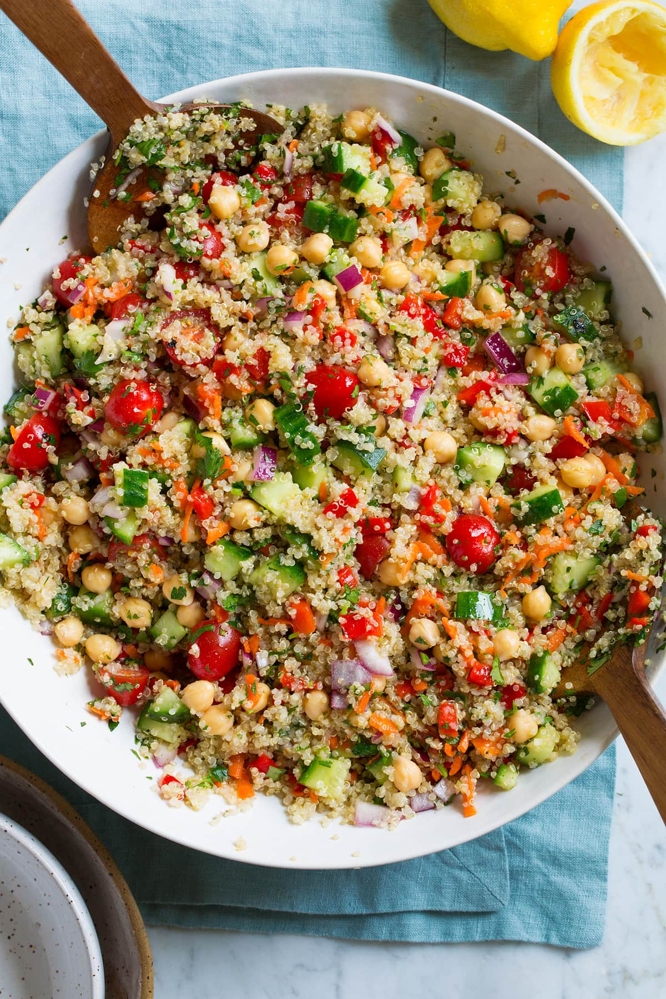

Quinoa Salad

Description
This is great for lunches and has lots of fiber for great poops.
You can really put veggies, seeds, and cheese you want in it. I recommend
goat or feta cheese to top it off.
Ingredients
- 5 T lemon juice
- 1 T honey
- 1 t dijion mustard
- 1 spoon garlic
- 3/4 t salt
- 1 t pepper
- 2 T canola oil
- 2 T olive oil
- 1 cup of dried quinoa
- whatever veggies you want to add
Steps
- In large pot , boil 1 cup quinoa + 2 cups water.
- Reduce to very low simmer, cover and cook for 15 mins.
- Remove from heat and let sit 5 mins
- Allow to cool
- Add in chopped veggies
- Make salad dressing